Од заборавен ТВ бокс до ретро конзолаFrom a forgotten TV box to a retro console
Обожавам да му наоѓам примена на „стар“ хардвер и да го враќам во живот, па еве го патот од стар ТВ бокс до ретро конзола. Имав еден стар Nexbox A95X-B7N што собираше прашина во фиока; сега влече NES, SNES и PlayStation игри на телевизор.
I love finding a use for “old” hardware and bringing it back to life, so here's the road from an old TV box to a retro console. I had an old Nexbox A95X-B7N collecting dust in a drawer; now it runs NES, SNES and PlayStation games on the TV.
„Рекуарементс“: мал дел од викендот, стар ТВ бокс и microSD или SD картичка (или USB стик, ако боксот нема слот за картичка). Андроидот на боксот останува недопрен: со картичката внатре бутира EmuELEC, без неа — Андроид, како порано.
Requirements: a small chunk of a weekend, an old TV box, and a microSD or SD card (or a USB stick if the box has no card slot). Android on the box stays untouched: with the card in, it boots EmuELEC; without it, Android as before.
Ова е целиот процес по ред, заедно со тоа што се скрши успат и како го поправив, за да ги прескокнеш моите грешки.
This is the whole build in order, including what broke along the way and how I fixed it, so you can skip my mistakes.
Што ти треба навистинаWhat you actually need
- ТВ бокс со Amlogic чип (не оди со секој, види подолу). Мојот: Nexbox A95X-B7N, Amlogic S905X, 2 GB RAM, 8 GB меморија.
- microSD картичка. Јас користев Netac од 32 GB и собрав околу 1600 игри, а останаа 3 GB празни. Земи поголема ако сакаш многу повеќе.
- USB читач на картички, ама само ако компјутерот нема SD слот. Мојот немаше.
- USB тастатура за подесување. Ако имаш џојстик, уште подобро: со тастатурата налетав на проблем (види тука).
- Чачкалка. 😃
- HDMI и, по можност, мрежен (Ethernet) кабел.
- Компјутер. Јас користев Omarchy; balenaEtcher работи и на Windows и macOS.
- A TV box with an Amlogic chip (not every box works, see below). Mine: Nexbox A95X-B7N, Amlogic S905X, 2 GB RAM, 8 GB storage.
- A microSD card. I used a 32 GB Netac and fit about 1,600 games with 3 GB to spare. Go bigger if you want a lot more.
- A USB card reader, but only if your PC has no SD slot. Mine didn't.
- A USB keyboard for setup. A gamepad is even better: the keyboard gave me trouble (see here).
- A toothpick. 😃
- HDMI and, ideally, an Ethernet cable.
- A PC. I used Omarchy; balenaEtcher also runs on Windows and macOS.
Оди ли со било кој ТВ бокс? Не баш. EmuELEC оди на Amlogic S905X, S905X2, S905X3 и S922X (и нивни варијанти, на пр. S905W). Обичниот S905 (без X) повеќе не оди, S912 е исфрлен од 4.0 (за него остана 3.9), а боксовите со Rockchip или Allwinner чип не се поддржани. Некои (MeCool, Mi Box) имаат заклучен bootloader, а евтините клонови знаат да имаат лажен RAM или да бутираат само од USB. Земи бокс со барем 2 GB RAM. Целата листа е на EmuELEC wiki.
Does any TV box work? Not quite. EmuELEC runs on Amlogic S905X, S905X2, S905X3 and S922X (and their variants, like the S905W). The plain S905 (no X) no longer works, the S912 was dropped in 4.0 (3.9 still supports it), and boxes with Rockchip or Allwinner chips aren't supported. Some (MeCool, Mi Box) have a locked bootloader, and cheap clones can come with fake RAM or boot only from USB. Get a box with at least 2 GB RAM. The full list is on the EmuELEC wiki.
Боксот не е Amlogic? Не се откажувај. Lakka е најблиску до EmuELEC: исто бутира директно во игри, само наместо EmulationStation го користи менито на RetroArch (разликите, види подолу). Има слики и за неколку Allwinner и Rockchip боксови (Tanix TX6, Beelink A1, Hugsun X99). За RK3318/RK3328 боксовите има Armbian, па RetroArch над него, ама тоа е повеќе чепкање. А ако не сакаш ништо да флешираш, RetroArch за Андроид оди на секој Андроид бокс, директно од Андроидот.
Box isn't Amlogic? Don't give up. Lakka is the closest thing to EmuELEC: it also boots straight into games, just with RetroArch's menu instead of EmulationStation (the differences: see below). It has images for a few Allwinner and Rockchip boxes (Tanix TX6, Beelink A1, Hugsun X99). RK3318/RK3328 boxes have Armbian, with RetroArch on top, but that's more tinkering. And if you don't want to flash anything, RetroArch for Android runs on any Android box, straight from Android.
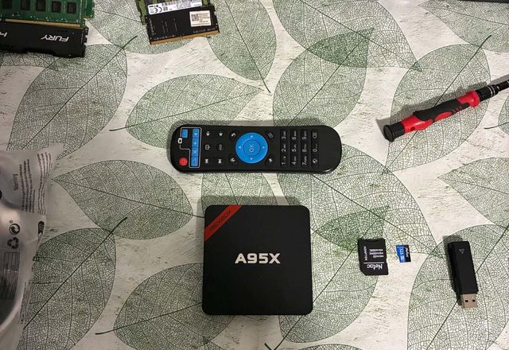
Запознај го боксотKnow your box
Прво, сврти го боксот и види со што располагаш. Етикетата одоздола ги кажува двете работи што ќе ти требаат подоцна: чипот и RAM-от. Кај мене: Amlogic S905X и 2 GB RAM.
First, flip the box over and see what you're working with. The label on the bottom tells you the two things you'll need later: the chip and the RAM. Mine: Amlogic S905X and 2 GB RAM.
Чипот кажува кои игри ќе ги влече. S905X е отприлика колку Raspberry Pi 3: сè до првиот PlayStation оди без проблем, N64 некогаш оди, некогаш не, а PSP, Dreamcast и сè поново е претешко.
The chip decides which games it can handle. The S905X is roughly Raspberry Pi 3 class: everything up to the original PlayStation runs fine, N64 is hit and miss, and PSP, Dreamcast and anything newer are too heavy.
RAM-от запомни го: од него зависи кој фајл ќе го избереш во чекор 4.
Remember the RAM: it decides which file you pick in step 4.
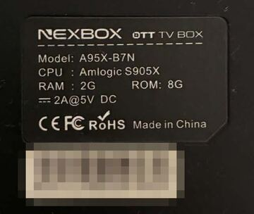
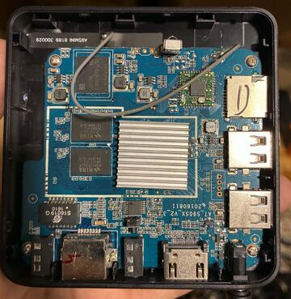
Симни EmuELECDownload EmuELEC
EmuELEC е мал оперативен систем (Линукс) што наместо десктоп бутира директно во мени со игри, EmulationStation. Самите игри ги вртат емулатори, програми што се преправаат дека се стара конзола; главниот е RetroArch.
EmuELEC is a small operating system (Linux) that boots straight into a game menu, EmulationStation, instead of a desktop. The games themselves run in emulators, programs that pretend to be an old console; the main one is RetroArch.
Зошто EmuELEC, а не Lakka?Why EmuELEC and not Lakka?
Lakka оди и на Amlogic боксови. Еве ги разликите што се битни за почетник:
Lakka runs on Amlogic boxes too. Here are the differences that matter for a beginner:
- Изгледа како конзола. EmuELEC отвора листа на игри со корици, опис и тема (видеото најгоре). Lakka отвора мени на RetroArch: моќно, ама повеќе личи на подесувања отколку на конзола, и почетник лесно се губи во него.
- Направен е баш за ваквите боксови. Целиот проект е за евтини Amlogic ТВ боксови, па упатствата и форумот се полни со истите проблеми што ќе ги имаш и ти.
- Повеќе емулатори. Lakka има само RetroArch. EmuELEC покрај RetroArch има и посебни (standalone) емулатори, па ако некоја игра не оди убаво во едниот, пробуваш друг.
- It looks like a console. EmuELEC opens a game list with covers, descriptions and a theme (the video at the top). Lakka opens RetroArch's menu: powerful, but it feels more like a settings screen than a console, and beginners get lost in it easily.
- It's made for exactly these boxes. The whole project targets cheap Amlogic TV boxes, so its guides and forum are full of the same problems you'll run into.
- More emulators. Lakka is RetroArch only. EmuELEC also ships standalone emulators next to RetroArch, so if a game runs badly in one, you try another.
Ајде да ја симнеме. Оди на GitHub, кај верзиите, и земи ја најновата. Јас ја зедов 4.8 (3 ноември 2025).
Let's get it. Head to the releases on GitHub and grab the latest. I went with 4.8 (3 November 2025).
Таму ќе видиш куп фајлови (сликата подолу). Не паничи, ти треба само еден: Generic, EmuELEC-Amlogic-ng.aarch64-4.8-Generic.img.gz (1,13 GB). Тој е за ТВ боксови; другите се за конкретни плочи (La Frite, Le Potato, Odroid).
You'll see a pile of files there (screenshot below). Don't panic, you only need one: Generic, EmuELEC-Amlogic-ng.aarch64-4.8-Generic.img.gz (1.13 GB). That's the one for TV boxes; the rest are for specific boards (La Frite, Le Potato, Odroid).
До секој фајл има и .sha256. Не е задолжително, ама ако сакаш да бидеш сигурен дека симнувањето е цело, симни го и него и спореди ги хашовите. Ако се разликуваат, симни пак.
Each file also has a .sha256 next to it. Optional, but if you want to be sure the download isn't broken, grab it too and compare the hashes. If they differ, download again.
sha256sum EmuELEC-Amlogic-ng.aarch64-4.8-Generic.img.gz
cat EmuELEC-Amlogic-ng.aarch64-4.8-Generic.img.gz.sha256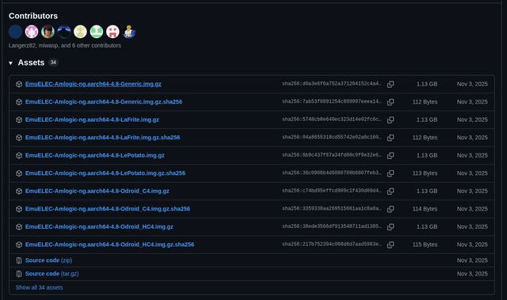
Флеширај ја картичкатаFlash the card
Флеширав со balenaEtcher: Flash from file → .img.gz фајлот (не треба да се отпакува) → Select target → картичката → Flash! Провери ја целта двапати: Etcher брише сè што ќе избереш.
I flashed with balenaEtcher: Flash from file → the .img.gz (no need to unzip it) → Select target → the card → Flash! Check the target twice: Etcher erases whatever you pick.
Мојот компјутер нема SD слот, па картичката ја ставив во адаптер, адаптерот во USB читач, а читачот во компјутерот (сликите подолу). Ако твојот има слот, ова не ти треба: само стави ја картичката.
My PC has no SD slot, so the card went into an adapter, the adapter into a USB reader, and the reader into the PC (photos below). If yours has a slot, skip all that and just put the card in.
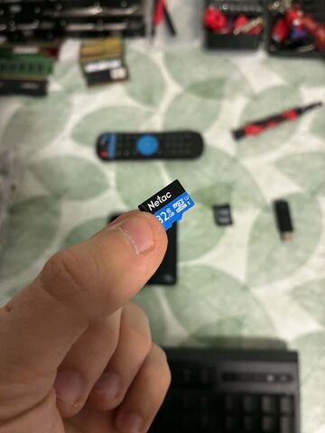
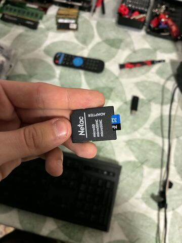
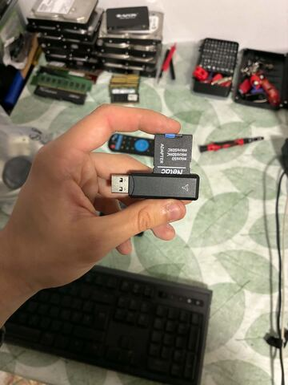
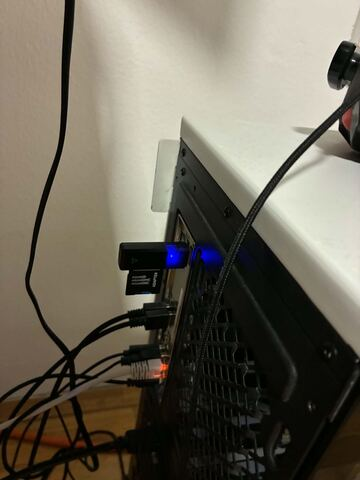
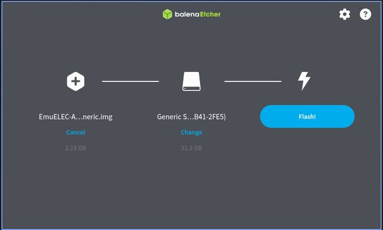
Ако повеќе сакаш терминал, наместо Etcher е една линија. Најди ја картичката со lsblk и замени го /dev/sdX; погрешна буква брише погрешен диск.
If you'd rather use a terminal, it's one line instead of Etcher. Find your card with lsblk and replace /dev/sdX; the wrong letter wipes the wrong disk.
lsblk
gzip -dc EmuELEC-Amlogic-ng.aarch64-4.8-Generic.img.gz | sudo dd of=/dev/sdX bs=4M conv=fsync status=progressИзбери device treePick the device tree
По флеширањето, картичката има мала FAT партиција EMUELEC со системот (SYSTEM), кернелот, скриптите за бутирање и папката device_trees. На кернелот му треба device tree, фајл што ја опишува плочата. Најди го вистинскиот во device_trees, копирај го во коренот на партицијата и преименувај го во dtb.img, од фајл менаџер или од терминал. За S905X со 2 GB RAM тоа е gxl_p212_2g.dtb; со 1 GB, gxl_p212_1g.dtb.
After flashing, the card has a small FAT partition called EMUELEC with the system image (SYSTEM), the kernel, the boot scripts and a device_trees folder. The kernel needs a device tree, a file that describes your board. Find the right one in device_trees, copy it to the root of the partition and rename it to dtb.img, in a file manager or a terminal. For an S905X with 2 GB RAM that's gxl_p212_2g.dtb; with 1 GB, gxl_p212_1g.dtb.
Кој фајл за кој бокс? Побарај го моделот на листата на CoreELEC (EmuELEC ги користи истите имиња) или на форумот на EmuELEC. Ако го нема, оди по чипот и RAM-от од етикетата: името почнува со фамилијата на чипот (gxl е S905X/W/L, g12a е S905X2, sm1 е S905X3, g12b е S922X), а RAM-от е во името (_1g, _2g, _4g). Мојот A95X-B7N го нема на листата, па одев по чип. Ако не бутира, пробај друг: dtb е само фајл на картичката, ништо не се расипува.
Which file for which box? Look up your model on CoreELEC's list (EmuELEC uses the same names) or on the EmuELEC forum. If it isn't there, go by the chip and RAM from the label: the name starts with the chip family (gxl is S905X/W/L, g12a is S905X2, sm1 is S905X3, g12b is S922X), and the RAM is in the name (_1g, _2g, _4g). My A95X-B7N isn't on the list, so I went by the chip. If it doesn't boot, try another: the dtb is just a file on the card, nothing breaks.
cd /run/media/$USER/EMUELEC
cp device_trees/gxl_p212_2g.dtb dtb.img
sync
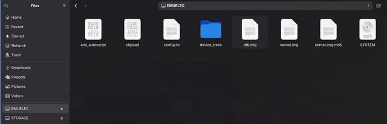
dtb.img е единствениот нов фајл.Before and after: dtb.img is the only new file.Бутирање од картичка: чачкалкатаBoot from the card: the toothpick
Amlogic боксовите имаат скриено reset копче на дното од AV приклучокот. Ако го држиш додека боксот се пали, bootloader-от го извршува aml_autoscript од картичката, а таа скрипта му кажува отсега прво да ја проверува SD картичката.
Amlogic boxes hide a reset button at the bottom of the AV jack. If you hold it while the box powers on, the bootloader runs aml_autoscript from the card, and that script tells it to check the SD card first from then on.
- Исклучи го напојувањето и стави ја картичката во TF слотот.
- Турни чачкалка во AV приклучокот додека не почувствуваш клик и држи.
- Приклучи го напојувањето. Држи додека не се појави логото на EmuELEC, па пушти.
- Unplug the power and put the card in the TF slot.
- Push a toothpick into the AV jack until you feel a click, and keep holding.
- Plug the power in. Keep holding until the EmuELEC logo appears, then let go.
Ова се прави само еднаш. Потоа боксот бутира EmuELEC секогаш кога картичката е внатре, а Андроид кога ја нема.
You only do this once. After that the box boots EmuELEC whenever the card is in, and Android when it isn't.
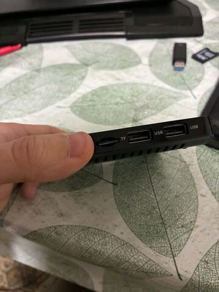
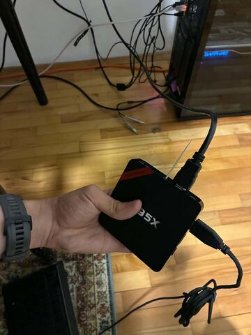
Првиот обид не успеа. Наместо EmuELEC се подигна Андроид и тивко направи Android/ и LOST.DIR/ на картичката. Не е штетно, но значи дека bootloader-от не го виде копчето. Пробај пак и држи подолго.
My first try didn't take. Android booted instead and quietly created Android/ and LOST.DIR/ on the card. That's harmless, but it means the bootloader never saw the button. Try again and hold it longer.
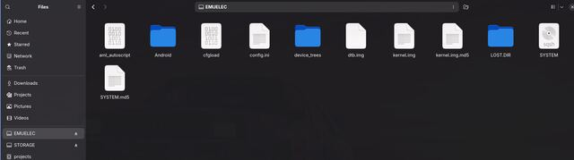
Android/ и LOST.DIR/ на партицијата EMUELEC: знак дека се подигнал Андроид, а не EmuELEC.Android/ and LOST.DIR/ on the EMUELEC partition: a sign that Android booted, not EmuELEC.Првото бутирање: не допирајFirst boot: hands off
Првото бутирање подесува работи: ги проширува партициите на цела картичка и ја копира почетната конфигурација од SYSTEM (кој е само за читање) на партицијата STORAGE. Не гаси ја струјата додека трае.
The first boot does setup work. It resizes the partitions to fill the card and copies the default configuration from the read-only SYSTEM image to the STORAGE partition. Don't cut the power while it runs.
Мојот падна токму на средина од тоа. Екранот се наполни со трага од кернелот додека userconfig.service, задачата што ги копира почетните фајлови, сè уште работеше, а грешката беше во cp процес: Unhandled fault: synchronous external abort
. Боксот сепак стигна до менито, но копирањето остана преполовено. Тоа го сфатив подоцна (следниот чекор).
Mine crashed in the middle of exactly that. The screen filled with a kernel trace while userconfig.service, the job that copies the defaults, was still running, and the fault was inside a cp process: Unhandled fault: synchronous external abort
. The box still made it to the menu, but the copy was left half done. I only understood that later (next step).
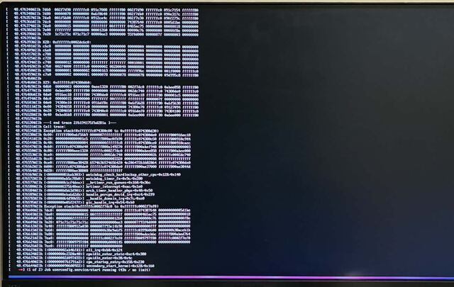
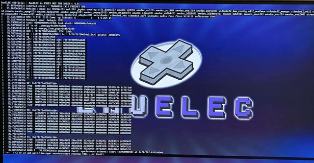
cp.First boot. Top: a watchdog trace with “Job userconfig.service/start running” at the bottom. Bottom: the kernel error over the EmuELEC splash; the process that crashed is cp.Ако првото бутирање падне, најевтино решение е повторно да ја флешираш картичката и да бутираш пак. Јас не го направив тоа и потрошив цела вечер барајќи ја штетата рачно.
If the first boot crashes, the cheapest fix is to flash the card again and boot again. I didn't, and spent an evening finding the damage by hand.
Нема волшебник, тастатурата е мртваNo input wizard, dead keyboard
EmuELEC се подигна, но немаше волшебник „држи копче за подесување“, тастатурата не реагираше, а менијата изгледаа скршено. Бришењето или празнењето на конфигурацијата за влез не помогна. Тука се криеја два различни проблеми.
EmuELEC came up, but there was no “hold a button to configure” wizard, the keyboard did nothing, and the menus looked broken. Deleting or emptying the input config didn't help. Two separate problems were hiding here.
Проблем 1: 758 празни фајловиProblem 1: 758 empty files
Со картичката назад во компјутерот, 803 од 6.483 фајлови на STORAGE имаа 0 бајти. 45 од нив се празни и во оригиналот. Другите 758 беа штета:
With the card back in the PC, 803 of the 6,483 files on STORAGE were 0 bytes. 45 of them are empty in the original too. The other 758 were damage:
| ПапкаFolder | Што имаWhat's in it | ПразниEmpty |
|---|---|---|
themes | стандардната тема Crystalthe default Crystal theme | 605 |
resources | графика за менијата, фонтови, XMLmenu graphics, fonts, XML | 144 |
scripts | вклучително скриптите за влезincluding the input config scripts | 9 |
Логот на EmulationStation (es_log.txt во истата папка) го кажува истото:
EmulationStation's log (es_log.txt in the same folder) says the same thing:
Error parsing XML file ".../resources/genres.xml"! No document element found
Could not initialize texture from memory, invalid data! (file path: :/frame.png …)
Error loading sound ".../mscroll.ogg"Ако сакаш да провериш дали и твојата картичка настрада, изброј ги празните фајлови:
To check whether your card got hit too, count the empty files:
sudo find /run/media/$USER/STORAGE/.config/emulationstation -type f -size 0 | wc -lНајлесно е она од погоре: флеширај пак и пушти го првото бутирање да заврши. Јас сакав да ја поправам, а за тоа не треба ништо од интернет: SYSTEM е squashfs image во кој се оригиналните фајлови под /usr/config. Извади ги со unsquashfs (пакетот squashfs-tools), па врати го секој фајл што се разликува:
The easy way is the one above: flash again and let the first boot finish. I wanted to repair it instead, and that needs nothing from the internet: SYSTEM is a squashfs image that holds the original files under /usr/config. Extract them with unsquashfs (from squashfs-tools), then copy back every file that differs:
unsquashfs -d /tmp/eesys /run/media/$USER/EMUELEC/SYSTEM usr/config/emulationstation#!/bin/bash
# Restore files truncated to 0 bytes, using the originals from the card's own SYSTEM image.
# Writes contents in place, so owner and permissions stay as they were.
set -euo pipefail
S="/run/media/${SUDO_USER:-$USER}/STORAGE/.config/emulationstation"
P=/tmp/eesys/usr/config/emulationstation
fixed=0
cd "$P"
while IFS= read -r -d '' f; do
if ! cmp -s "$f" "$S/$f"; then
if [ -e "$S/$f" ]; then cat "$f" > "$S/$f"; else install -D -m 644 "$f" "$S/$f"; fi
fixed=$((fixed+1))
fi
done < <(find resources themes scripts -type f -print0)
sync
echo "restored $fixed files"
echo "empty files left: $(find "$S" -type f -size 0 | wc -l)"STORAGE е ext4 и е на root, затоа sudo. На мојата картичка: restored 758 files, empty files left: 0.
STORAGE is ext4 and owned by root, hence sudo. On my card: restored 758 files, empty files left: 0.
Проблем 2: волшебникот никогаш не се појавува, намерноProblem 2: the wizard never shows up, by design
Ова не е баг, туку така е направено: EmulationStation на EmuELEC никогаш не го отвора волшебникот при стартување, а тастатурата ја чита само од es_input.cfg. Значи празен es_input.cfg е тастатура што не прави ништо, без волшебник да го поправи тоа. Ако имаш џојстик, пробај прво со него.
This one isn't a bug, it's by design: EmuELEC's EmulationStation never opens the input wizard at startup and reads the keyboard only from es_input.cfg. So an empty es_input.cfg means a keyboard that does nothing, and no wizard to fix it. If you have a gamepad, try that first.
Решението е сам да напишеш блок за тастатурата, во <inputList> во STORAGE/.config/emulationstation/es_input.cfg. Мојата прва верзија (сликата) користеше Enter за A и Space за Start. Работеше во менијата, но во игрите RetroArch си има свои стандардни копчиња, па истото копче правеше различни работи во менијата и во игрите. Конечната верзија ги следи стандардните на RetroArch.
The fix is to write a keyboard block yourself, inside <inputList> in STORAGE/.config/emulationstation/es_input.cfg. My first version (screenshot) used Enter for A and Space for Start. It worked in menus, but in games RetroArch uses its own default keys, so the same key did different things in menus and in games. The final version follows RetroArch's defaults.

<inputConfig type="keyboard" deviceName="Keyboard" deviceGUID="-1">
<input name="up" type="key" id="1073741906" value="1" />
<input name="down" type="key" id="1073741905" value="1" />
<input name="left" type="key" id="1073741904" value="1" />
<input name="right" type="key" id="1073741903" value="1" />
<input name="a" type="key" id="120" value="1" /> <!-- X -->
<input name="b" type="key" id="122" value="1" /> <!-- Z -->
<input name="x" type="key" id="115" value="1" /> <!-- S -->
<input name="y" type="key" id="97" value="1" /> <!-- A -->
<input name="start" type="key" id="13" value="1" /> <!-- Enter -->
<input name="select" type="key" id="1073742053" value="1" /> <!-- Right Shift -->
<input name="leftshoulder" type="key" id="113" value="1" /> <!-- Q -->
<input name="rightshoulder" type="key" id="119" value="1" /> <!-- W -->
<input name="lefttrigger" type="key" id="49" value="1" /> <!-- 1 -->
<input name="righttrigger" type="key" id="50" value="1" /> <!-- 2 -->
<input name="leftthumb" type="key" id="99" value="1" /> <!-- C -->
<input name="rightthumb" type="key" id="118" value="1" /> <!-- V -->
<input name="hotkeyenable" type="key" id="1073742053" value="1" />
</inputConfig>RetroArch веќе ги користи тие копчиња во игрите. Му фалеа само L2, R2, L3 и R3, па ги додадов во STORAGE/.config/retroarch/retroarch.cfg:
RetroArch already uses those keys in games. It only lacked L2, R2, L3 and R3, so I added them to STORAGE/.config/retroarch/retroarch.cfg:
input_player1_l2 = "num1"
input_player1_r2 = "num2"
input_player1_l3 = "c"
input_player1_r3 = "v"| КопчеKey | Копче на џојстикPad button | Во менијатаIn menus |
|---|---|---|
| СтрелкиArrows | D-pad | движењеmove |
| X | A | потврдиconfirm |
| Z | B | назадback |
| S | X | зависи од екранотdepends on the screen |
| A | Y | омилена играfavourite |
| Enter | Start | главно мениmain menu |
| Right Shift | Select + hotkey | опцииoptions |
| Q / W | L / R | смени системchange system |
| 1 / 2 | L2 / R2 | скокни по букваjump by letter |
| C / V | L3 / R3 | — |
| КопчеKey | Што правиAction |
|---|---|
| Esc | излез од игратаquit the game |
| F1 | мени на RetroArchRetroArch menu |
| F2 / F4 | зачувај / вчитај состојбаsave / load state |
| F6 / F7 | смени слот за зачувувањеchange save slot |
| Space | забрзувањеfast-forward |
| P | паузаpause |
| H | рестартreset |
| F8 | слика од екранотscreenshot |
| F9 | без звукmute |
Ако некое не работи, држи десен Shift (hotkey) и притисни го пак.
If one of them does nothing, hold Right Shift (the hotkey) and press it again.
Што има на картичкатаWhat's on the card
По првото бутирање картичката има три партиции. Од компјутер најчесто ќе работиш со две: STORAGE (ext4, на root, па за измени треба sudo) и EEROMS (FAT32, па ниту еден фајл над 4 GB).
After the first boot the card has three partitions. From the PC you'll mostly touch two: STORAGE (ext4, owned by root, so edits need sudo) and EEROMS (FAT32, so no single file over 4 GB).
| ПартицијаPartition | ГолеминаSize | ТипType | СодржинаContents |
|---|---|---|---|
EMUELEC | 2 GB | FAT32 | SYSTEM, кернел, dtb.img, скрипти за бутирањеSYSTEM, kernel, dtb.img, boot scripts |
STORAGE | 6 GB | ext4 | /storage: подесувања, теми, скрипти/storage: settings, themes, scripts |
EEROMS | 21,1 GB21.1 GB | FAT32 | /storage/roms: игри, bios, BGM, savestates/storage/roms: games, bios, BGM, savestates |
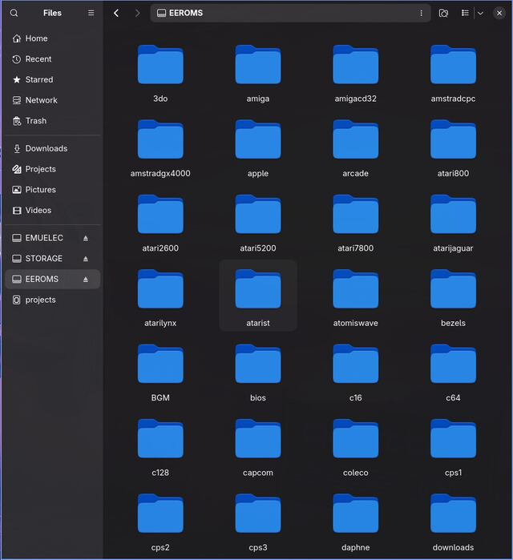
EEROMS: по една папка за секој систем, плус bios, BGM (музика), savestates и screenshots.EEROMS: one folder per system, plus bios, BGM (music), savestates and screenshots.Игри, BIOS и форматиGames, BIOS and formats
ROM-ови, накраткоROMs, briefly
ROM фајл е копија бајт по бајт од чипот за меморија само за читање во касетата; кај конзолите со дискови тоа е image од дискот. Емулаторот („core“) ги имитира процесорот, графиката и звукот на конзолата. EmulationStation е само менито што го стартува.
A ROM file is a byte-for-byte copy of a cartridge's read-only memory chip; for disc consoles it's a disc image. The emulator (the “core”) imitates the console's CPU, graphics and sound chips. EmulationStation is only the menu that starts it.
Играј само игри што ги поседуваш: извади ги од своите касети и дискови, или играј homebrew и бесплатни игри. На itch.io, PDRoms и во NESdev заедницата ги има многу, а ScummVM има бесплатни авантуристички игри. Нема да ставам линкови до ROM сајтови.
Only play games you own: dump your own cartridges and discs, or play homebrew and freeware. itch.io, PDRoms and the NESdev community have plenty, and ScummVM has free adventure games. I won't link ROM sites.
Еден добар фајл по играOne good file per game
Сетовите за касети користат No-Intro имиња, од кои се гледа регионот и ревизијата. Моите правила:
Cartridge sets use No-Intro naming, which tells you the region and revision. My rules:
- Прво
(USA)или(World): 60 Hz, брзината за која се направени игрите.(Europe)е PAL, 50 Hz: побавно и сецка на слика од 60 Hz. (Europe)само ако немало USA издание. Земи ја највисоката(Rev N).- Прескокни
(Beta),(Proto),(Demo),[b](лош dump) и мулти-касети со „ + “ во името. - NES: земи го Headered сетот. iNES заглавието од 16 бајти му кажува на емулаторот кој mapper (чипот за менување банки во касетата) му треба; без заглавие мора да погодува.
(USA)or(World)first: 60 Hz, the speed the games were made for.(Europe)is PAL, 50 Hz: slower, and it judders on a 60 Hz picture.(Europe)only when there was no USA release. Keep the highest(Rev N).- Skip
(Beta),(Proto),(Demo),[b](bad dump), and multi-carts with “ + ” in the name. - NES: take the Headered set. The 16-byte iNES header tells the emulator which mapper (the cartridge's bank-switching chip) it needs; headerless files make it guess.
Ова се прави рачно: од секоја игра остави еден фајл, другите избриши ги. Не е задолжително, ама листата е многу почиста без пет верзии од истата игра.
You do this by hand: keep one file per game and delete the rest. It's optional, but the list is much cleaner without five versions of the same game.
PlayStation: CHD (не е задолжително)PlayStation: CHD (optional)
За PS1 јас користев CHD: без загуба, 30–50% помал од BIN/CUE, еден фајл по диск, а PCSX ReARMed го чита директно. Не мора: BIN/CUE работи исто, CHD е само за да собере повеќе на картичка од 32 GB. ISO не го препорачувам, ги губи CD аудио траките. Ако одиш на CHD, конвертирај со chdman од MAME (на Arch е во mame-tools), секогаш од .cue, не од .bin:
For PS1 I used CHD: lossless, 30–50% smaller than BIN/CUE, one file per disc, and the PCSX ReARMed core reads it directly. You don't have to: BIN/CUE works just the same, CHD only fits more games on a 32 GB card. I'd skip ISO, it loses the CD audio tracks. If you go CHD, convert with chdman from MAME (on Arch it's in mame-tools), always from the .cue, not the .bin:
sudo pacman -S mame-tools
for c in *.cue; do chdman createcd -i "$c" -o "${c%.cue}.chd"; doneИгрите со повеќе дискови добиваат обичен текстуален .m3u плејлист за да се појават само еднаш во листата. Дискот се менува од менито на RetroArch (F1 → Disc Control):
Multi-disc games get a plain text .m3u playlist so they appear once in the list. Swap discs from the RetroArch menu (F1 → Disc Control):
Final Fantasy VII (USA) (Disc 1).chd
Final Fantasy VII (USA) (Disc 2).chd
Final Fantasy VII (USA) (Disc 3).chdИмињата на фајловите знаат да лажат. Кај мене три лажеа: „Final Fantasy VII“ се покажа како демото Interactive Sampler од 196 MB (SCUS-94961), „Metal Gear Solid“ беше VR Missions, а „Suikoden II“ беше првиот Suikoden. Ќе ги фатиш кога ќе ги пуштиш, а сомнителна големина е добар знак (FFVII диск од 196 MB?). Опционално, пред копирање провери дека CHD-фајловите се цели:
File names can lie. Three of mine did: a “Final Fantasy VII” turned out to be the 196 MB Interactive Sampler demo (SCUS-94961), “Metal Gear Solid” was VR Missions, and “Suikoden II” was the first Suikoden. You'll catch them when you launch them, and a suspicious size is a good hint (a 196 MB FFVII disc?). Optionally, check the CHDs are intact before copying:
for f in *.chd; do echo "$f: $(chdman verify -i "$f" 2>&1 | tail -1)"; doneBIOS
Конзолите со дискови имаа фирмвер што го стартуваше системот и го вчитуваше дискот. Емулаторите не смеат да го вклучат бидејќи е заштитен со авторски права, па го вадиш од својата конзола. PCSX ReARMed бара US BIOS како scph5501.bin во EEROMS/bios, со мали букви, и му го проверува хашот:
Disc consoles had firmware that started the system and loaded the disc. Emulators can't ship it because it's copyrighted, so you dump it from your own console. PCSX ReARMed wants the US BIOS as scph5501.bin in EEROMS/bios, in lowercase, and checks its hash:
cp SCPH-5501.BIN /run/media/$USER/EEROMS/bios/scph5501.bin
md5sum /run/media/$USER/EEROMS/bios/scph5501.bin
# 490f666e1afb15b7362b406ed1cea246| СистемSystem | ФајлFile |
|---|---|
| PS1 Јапонија / ЕвропаPS1 Japan / Europe | scph5500.bin / scph5502.bin |
| PC Engine CD | syscard3.pce |
| Famicom Disk System | disksys.rom |
| Neo Geo | neogeo.zip |
| Sega CD (USA) | bios_CD_U.bin |
Копирање на картичкатаCopying to the card
Копирај ги игрите со фајл менаџерот, како било што друго, секоја во папката на својот систем (EEROMS/psx, EEROMS/snes...). Пред да ја извадиш картичката, секогаш Eject и почекај: SD картичките се бавни и компјутерот запишува уште долго откако копирањето „завршило“.
Copy the games with your file manager like anything else, each into its system's folder (EEROMS/psx, EEROMS/snes...). Before pulling the card, always Eject and wait: SD cards are slow, and the PC keeps writing long after the copy has “finished”.
Ако при вадење пишува „device busy“, а ништо нема отворено, тоа е токму тоа: компјутерот уште запишува гигабајти. Почекај (или пушти sync во терминал) и пробај пак. Еднаш пробав udisksctl power-off; читачот исчезна сè додека не го извадив и вратив. Обичен Eject е доволен.
If ejecting says “device busy” while nothing is open, that's exactly it: the PC is still writing gigabytes. Wait (or run sync in a terminal) and try again. I tried udisksctl power-off once; the reader vanished until I unplugged it and plugged it back in. A plain Eject is enough.
Колку собира 32 GBHow much fits on 32 GB
За игри остануваат околу 22 GB. Игрите од касети се ситни; PS1 дисковите се тие што ја полнат картичката, околу 320 MB секој како CHD. Јас собрав околу 1600 игри, а останаа 3 GB празни.
About 22 GB is left for games. Cartridge games are tiny; PS1 discs are what fill the card, around 320 MB each as CHD. I fit about 1,600 games with 3 GB to spare.
| ГрупаGroup | ИгриGames | ПросторSpace |
|---|---|---|
| NES, SNES, Mega Drive, Game Boy, PC Engine | ~200 | 500 MB |
| GBA | 30 | 400 MB |
| Аркадни (FBNeo)Arcade (FBNeo) | 40 | 1 GB |
| N64 | 15 | 400 MB |
| PS1 (CHD) | ~30 | 12 GB |
| Корици и сликиBox art and screenshots | — | 1–2 GB |
| Слободно за зачувувањаFree for saves | — | ~5 GB |
Што оди: сè до PS1 на полна брзина со стандардни подесувања. N64 зависи (Ocarina of Time се игра, со успорувања). PSP, Dreamcast, Saturn, DS, GameCube и поново се претешки за S905X.
What runs: everything up to PS1 at full speed on default settings. N64 is mixed (Ocarina of Time plays, with slowdown). PSP, Dreamcast, Saturn, DS, GameCube and newer are too heavy for the S905X.
Корици и слики од игритеBox art and screenshots
Листа на игри без слики изгледа тажно. Scraping значи симнување корици, слики и описи од ScreenScraper, за што треба бесплатна сметка. Најлесно е од самиот бокс: главното мени има scraper. Јас користев Skyscraper на компјутер, бидејќи картичката веќе беше таму:
A game list without pictures looks sad. Scraping downloads covers, screenshots and descriptions from ScreenScraper, which needs a free account. The easiest way is on the box itself: the main menu has a scraper. I used Skyscraper on the PC because the card was in it anyway:
yay -S skyscraper-gitРецепт за слики: по една корица, една слика од играта и едно лого по игра, без составени слики:
An artwork recipe keeps it to one cover, one screenshot and one logo per game, with no composite images:
<?xml version="1.0" encoding="UTF-8"?>
<artwork>
<output type="screenshot" width="480"/>
<output type="cover" height="400"/>
<output type="marquee" width="300"/>
</artwork>Оди во два чекора: прво симнување во кешот на Skyscraper (мрежа), па запишување на gamelist.xml и сликите на картичката (без мрежа):
It runs in two steps: first download into Skyscraper's cache (network), then write gamelist.xml and the images to the card (offline):
R=/run/media/$USER/EEROMS/psx
Skyscraper -p psx -s screenscraper -u 'USER:PASSWORD' --flags unattend,nosubdirs -i "$R"
Skyscraper -p psx -f emulationstation -a ~/.skyscraper/artwork-ee.xml -i "$R" -g "$R" -o "$R/media" --flags relative,unattend,nosubdirs-iмора да е апсолутна патека, инаку Skyscraper одбива со relative path which is not valid.- Бесплатна ScreenScraper сметка добива една нишка.
-t 8тивко се намалува на 1: околу 7 игри во минута, па стотици игри траат со часови. Не пуштај две одеднаш; серверот одбива и може да те блокира некое време. - Без
marqueeво рецептот, патеките до логата покажуваа кон~/.skyscraperна компјутерот, што го нема на боксот. - Повторното генерирање на
gamelist.xmlго брише запишаното време на играње (gametime). Прво направи копија.
-imust be an absolute path, or Skyscraper refuses with relative path which is not valid.- A free ScreenScraper account gets one thread.
-t 8is quietly reduced to 1: about 7 games a minute, so hundreds of games take hours. Don't run two at once; the server refuses and may block you for a while. - Without
marqueein the recipe, logo paths pointed into~/.skyscraperon the PC, which doesn't exist on the box. - Regenerating
gamelist.xmldrops the recorded play time (gametime). Back it up first.
Резултат за PS1: 52 од 53 игри пронајдени, 22 MB слики, околу 0,25 MB по игра.
Result for PS1: 52 of 53 games found, 22 MB of images, about 0.25 MB per game.
Ако правиш scraping на боксот, прво исклучи ги додатоците во опциите на scraper-от (или во STORAGE/.config/emulationstation/es_settings.cfg). Само видеата се 2–10 MB по игра и брзо ја полнат картичка од 32 GB. „Maps“ тука се мапи на световите направени од фанови, прикажани во прегледувач на слики, а не мапи во самата игра.
If you scrape on the box instead, turn off the extras first in the scraper options (or in STORAGE/.config/emulationstation/es_settings.cfg). Videos alone are 2–10 MB per game and fill a 32 GB card quickly. “Maps” here are fan-made world maps shown in a picture viewer, not in-game maps.
<bool name="ScrapeBezel" value="false" />
<bool name="ScrapeFanart" value="false" />
<bool name="ScrapeManual" value="false" />
<bool name="ScrapeMap" value="false" />
<bool name="ScrapeVideos" value="false" />Подесувања што се битниSettings that matter
Главната поука: не менувај го retroarch.cfg за видео и емулациски подесувања. setsettings.sh на EmuELEC ги препишува секој пат кога стартува игра, од /storage/.config/emuelec/configs/emuelec.conf. Таму стави ги подесувањата: global.клуч за сè, систем.клуч (на пр. nes.runahead) за еден систем. Подесување за игра е посилно од она за систем, а тоа од глобалното. Не мора да го уредуваш фајлот рачно: повеќето од ова го има и во менијата (Game Settings, System Settings), а тие пишуваат токму во emuelec.conf.
The main lesson: don't edit retroarch.cfg for video and emulation settings. EmuELEC's setsettings.sh rewrites them every time a game starts, from /storage/.config/emuelec/configs/emuelec.conf. Put settings there instead: global.key for everything, system.key (like nes.runahead) for one system. A per-game setting beats a per-system one, which beats global. You don't have to edit the file by hand: most of this is also in the menus (Game Settings, System Settings), and they write to that same emuelec.conf.
-system.timezone=America/Mexico_City
+system.timezone=Europe/Skopje
-updates.enabled=1
+updates.enabled=0
+global.shaderset=sharp/sharp-bilinear-simple.glslp
+global.integerscale=0
+global.smooth=0
+global.rewind=0
+global.autosave=1
+nes.runahead=1
-global.retroarchLogging=1
+global.retroarchLogging=0- Шејдер
sharp-bilinear-simple: остри пиксели на секоја големина, без нерамномерни пиксели како кај обичното скалирање и без црни рабови како кај integer скалирањето. Затоа integer scale и smoothing се исклучени. - Rewind исклучен: троши процесор и меморија што овој чип ги нема во вишок.
- Auto-save вклучен: при излез се зачувува состојбата, а при старт играта продолжува.
- Run-ahead од една рамка само за NES, за помало доцнење на влезот таму каде што има простор.
- Ажурирања исклучени: подобро да ажурирам намерно, откако ќе направам копија од картичката.
- Логирање исклучено: помалку запишување на SD картичката.
- The
sharp-bilinear-simpleshader: crisp pixels at any scale, without the uneven pixel widths of plain scaling or the black borders of integer scaling. So integer scale and smoothing are off. - Rewind off: it costs CPU and memory this chip doesn't have to spare.
- Auto-save on: quitting saves a state and starting the game resumes it.
- Run-ahead of one frame on NES only, to cut input lag where there's headroom.
- Updates off: I'd rather update on purpose, after backing up the card.
- Logging off: fewer writes to the SD card.
Веќе точно по стандард: ee_videomode=1080p60hz (чипот не може убаво 4K, а 50 Hz сецка), global.maxperf=1 (performance governor) и исклучени bezels.
Already right by default: ee_videomode=1080p60hz (the chip can't do 4K well, and 50 Hz judders), global.maxperf=1 (performance governor) and bezels off.
| СистемSystem | Core | ЗабелешкаNote |
|---|---|---|
| NES | FCEUmm | стандарден; Nestopia ако некоја игра покажува црн екранthe default; Nestopia if a game shows a black screen |
| SNES | Snes9x | Snes9x 2010 ако SuperFX игрите (Star Fox, Yoshi's Island) се бавниSnes9x 2010 if SuperFX games (Star Fox, Yoshi's Island) are slow |
| PS1 | PCSX ReARMed | dynarec вклучен, внатрешна резолуција 1x, frameskip исклученdynarec on, internal resolution 1x, frameskip off |
Телевизор и џојстициTV and controllers
Ова уште не го подесив; ова е планот.
I haven't set these up yet; this is the plan.
- Телевизор: режим на слика Game, motion smoothing исклучено, големина на слика Just Scan или Screen Fit за ништо да не се сече.
- Џојстици: 2,4 GHz џојстици со USB донгл се посигурни од Bluetooth-от на боксот, кој го исклучив. Има само две USB порти, па користи hub ако тастатурата останува приклучена.
- Подеси го секој џојстик од Controller Settings во главното мени и стави Hotkey Enable на Select. Тогаш работат вообичаените комбинации: Select+Start излегува, Select+R зачувува состојба, Select+L ја вчитува.
- TV: Game picture mode, motion smoothing off, picture size Just Scan or Screen Fit so nothing is cropped.
- Pads: 2.4 GHz pads with a USB dongle are more reliable than the box's Bluetooth, which I turned off. There are only two USB ports, so use a hub if the keyboard stays plugged in.
- Map each pad from Controller Settings in the main menu and set Hotkey Enable to Select. Then the usual combos work: Select+Start quits, Select+R saves a state, Select+L loads it.
Заклучи гоLock it down
Ова е опционално. Стандардно EmuELEC пушта Samba (споделување фајлови на мрежа, стандардна најава root / emuelec), а SSH е едно подесување подалеку. Сакам боксот да стигнува до интернет (scraping, синхронизација на време), но ништо од мојата мрежа да не стигнува до боксот. Сервисите проверуваат фајлови-знаменца во STORAGE/.cache/services кога боксот се пали:
This part is optional. Out of the box EmuELEC runs Samba (network file sharing, default login root / emuelec), and SSH is one setting away. I want the box to reach the internet (scraping, time sync) but nothing on my network to reach the box. The services check flag files in STORAGE/.cache/services when the box boots:
cd /run/media/$USER/STORAGE/.cache/services
sudo rm -f samba.conf avahi.conf sshd.conf
sudo touch samba.disabled
printf 'RULES=public\n' | sudo tee iptables.confRULES=public ги вчитува јавните firewall правила на EmuELEC: дојдовниот и проследениот сообраќај се фрлаат, а одлезниот и одговорите се дозволени. Со ee_ssh.enabled=0 и исклучени Wi-Fi и Bluetooth во emuelec.conf, SSH, Samba и Avahi се исклучени, а firewall-от вклучен.
RULES=public loads EmuELEC's public firewall rules: incoming and forwarded traffic is dropped, outgoing traffic and replies are allowed. With ee_ssh.enabled=0 and Wi-Fi and Bluetooth off in emuelec.conf, that leaves SSH, Samba and Avahi off and the firewall on.
Ако повеќе сакаш да копираш игри преку мрежа, остави ја Samba, отвори smb://IP-НА-БОКСОТ/ во фајл менаџерот и резервирај ја IP адресата на боксот во рутерот. Никогаш не ја отворај кон интернет. Очекувај околу 10 MB/s; мрежната порта е 100 Mbit.
If you'd rather copy games over the network, keep Samba on, open smb://BOX-IP/ in your file manager and reserve the box's IP in your router. Never expose it to the internet. Expect about 10 MB/s; the Ethernet port is 100 Mbit.
Тема и музикаTheme and music
Стандардната тема Crystal е во ред (сликата подолу). Јас сакав нешто аркадно. EmuELEC чува список од 82 теми во themes.json во репозиториумот emuelec.github.io. Прво пробав Arcadeplanet, но има 173 MB и во README-то препорачува Raspberry Pi 4 или побрз. Neon Overdrive (gradient) има 28 MB, без видеа, и изгледа токму како што треба:
The default Crystal theme is fine (photo below). I wanted something arcade. EmuELEC keeps a list of 82 themes in themes.json in the emuelec.github.io repository. I tried Arcadeplanet first, but it's 173 MB and its README recommends a Raspberry Pi 4 or faster. Neon Overdrive (gradient) is 28 MB with no videos and looks the part:
git clone --depth 1 https://github.com/EmuELEC/es-theme-neon-overdrive-gradient
rm -rf es-theme-neon-overdrive-gradient/.git
sudo cp -r es-theme-neon-overdrive-gradient /run/media/$USER/STORAGE/.config/emuelec/themes/Избери ја во UI Settings или постави ја во es_settings.cfg:
Pick it in UI Settings, or set it in es_settings.cfg:
<string name="ThemeSet" value="es-theme-neon-overdrive-gradient" />
<string name="ThemeSystemView" value="" />Лиценцата на темата е само за лична употреба, па не ја споделувам. Ако скролањето е бавно, стави го стилот на транзиција на Instant.
The theme's licence is personal use only, so I'm not redistributing it. If scrolling feels slow, set the transition style to Instant.
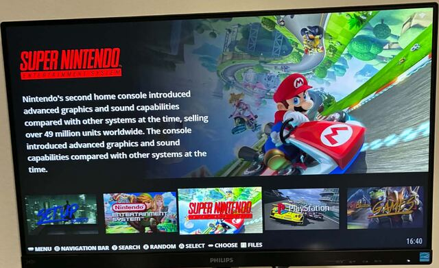
Музика во позадина е секој MP3 во EEROMS/BGM. Јас ја користев Resistor Anthems од Eric Skiff: chiptune со лиценца CC BY 4.0, бесплатна со наведување на авторот. 17 песни, 62 MB. audio.display_titles=1 во emuelec.conf го покажува насловот на песната кога почнува.
Background music is any MP3 in EEROMS/BGM. I used Eric Skiff's Resistor Anthems: chiptune licensed CC BY 4.0, so it's free with credit. 17 tracks, 62 MB. audio.display_titles=1 in emuelec.conf shows the song title when a track starts.
Дали save states ќе ја наполнат картичката?Will save states fill the card?
Не. Auto-save чува по една компресирана состојба по игра и ја препишува секој пат. Приближни големини по состојба: NES 30–80 KB, SNES 150–300 KB, PS1 1–2 MB. Дури и да ја играм секоја игра на картичката по еднаш, тоа е околу 400 MB. Рачните зачувувања во многу слотови се собираат: десет слотови за секоја PS1 игра се околу 1 GB. Состојбите се во EEROMS/savestates; копирај ги на друго место одвреме-навреме.
No. Auto-save keeps one compressed state per game and overwrites it each time. Rough sizes per state: NES 30–80 KB, SNES 150–300 KB, PS1 1–2 MB. Even if I played every game on my card once, that's about 400 MB. Manual saves in many slots do add up: ten slots for every PS1 game is around 1 GB. States live in EEROMS/savestates; copy them somewhere else now and then.
Што научивWhat I learned
- Остави го првото бутирање да заврши. Ако падне, флеширај пак.
- Празнењето на
es_input.cfgне го враќа волшебникот. Напиши го блокот за тастатура сам. - Нека копчињата во менијата одговараат на стандардните во RetroArch, за едно копче секаде да значи исто.
- Подесувањата одат во
emuelec.conf;retroarch.cfgсе препишува при секое стартување. - Провери ги серијските броеви на PS1 дисковите; имињата знаат да лажат.
- На мала картичка, исклучи ги видеата во scraper-от.
- Гаси од менито (Quit → Shutdown). Прекин на струја додека се запишува е начинот на кој фајловите остануваат празни.
- Let the first boot finish. If it crashes, flash again.
- Emptying
es_input.cfgdoesn't bring the wizard back. Write the keyboard block yourself. - Make the menu keys match RetroArch's defaults, so a key means the same thing everywhere.
- Settings go in
emuelec.conf;retroarch.cfggets rewritten on every launch. - Check PS1 boot serials; file names can lie.
- On a small card, turn off scraper videos.
- Shut down from the menu (Quit → Shutdown). A power cut during writes is how files end up empty.
Што следуваWhat's next
- Два безжични џојстици, со Hotkey Enable на Select.
- Да ги довршам сликите за NES и SNES со scraper-от на боксот (околу три часа).
- Брзи проверки: дали се појавува PlayStation логото (BIOS-от е пронајден), дали auto-save продолжува и дали новите копчиња работат во игрите.
- Можеби Game Boy, GBA, Mega Drive и неколку аркадни игри. Има место за нив.
- Two wireless pads, with Hotkey Enable set to Select.
- Finish the box art for NES and SNES with the scraper on the box (about three hours).
- Quick checks: the PlayStation logo plays (the BIOS is found), auto-save resumes, and the new keys work in games.
- Maybe Game Boy, GBA, Mega Drive and a few arcade games. There's room for them.